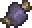
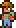
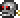
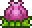
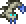
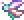
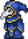

Bosses
King Slime:
King Slime là một con slime xanh khổng lồ với 2.000 / 2.800 / 3.570 máu. Nó được triệu hồi bằng Slime Crown, hoặc sau khi giết 150 (75 nếu nó đã bị giết) slime trong một trận Slime Rain, hoặc cũng hiếm khi có thể xuất hiện hoàn toàn một mình ở một phần ba ngoài của bản đồ
King Slime ở chế độ chuyên gia sẽ thả một Đồng vàng, một hoặc hai mảnh quần áo Ninja và một trong số nhiều vật phẩm liên quan đến chất nhờn.
Guide:King Slime strategies


Trong Chế độ chuyên gia (và Chế độ bậc thầy), King Slime có thể triệu hồi các Slime có gai, tương tự như Slime rừng có gai và Slime băng có gai.
Eye of Cthulhu:
Eye of Cthulhu là một nhãn cầu khổng lồ với 2.800 / 3.640 / 4.641 máu. Nó có 1/3 (33,33%) cơ hội xuất hiện vào đầu mỗi đêm khi một người chơi trên thế giới có 200 máu tối đa trở lên và hơn 10 phòng thủ, và có 3 hoặc nhiều NPC sống trong nhà. Nó sẽ tiếp tục như vậy cho đến khi bị đánh bại lần đầu tiên. Nó cũng có thể được triệu hồi bằng cách sử dụng Suspicious Looking Eye vào ban đêm. Nếu không bị người chơi đánh bại vào cuối đêm, nó sẽ di chuyển lên trên và biến mất. Đây thường là trùm đầu tiên mà người chơi phải đối mặt. Nó di chuyển qua các khối và sinh ra Servants of Cthulhu. Ở Chế độ Chuyên gia (và Chế độ Bậc thầy), Eye of Cthulhu sẽ thực hiện một cú lao nhanh theo chuỗi ở dạng thứ hai, sử dụng đòn tấn công thường xuyên hơn khi lượng máu của nó thấp hơn. Đòn tấn công lao nhanh theo chuỗi cũng sẽ tăng theo mức độ hung hăng theo cùng một cách. Điều này có thể khiến nó lao đi liên tục với tốc độ cao trong khi lượng máu rất thấp.
Guide:Eye of Cthulhu strategies

Trong Chế độ Chuyên gia (và Chế độ Bậc thầy), Eye of Cthulhu sẽ thực hiện một cú lao nhanh theo chuỗi ở dạng thứ hai, sử dụng đòn tấn công thường xuyên hơn khi lượng máu thấp hơn. Đòn tấn công lao theo chuỗi cũng sẽ tăng dần mức độ hung hăng theo cùng một cách. Điều này có thể khiến nó lao nhanh gần như liên tục ở tốc độ cao khi lượng máu rất thấp.
Eater of Worlds:
Eater of Worlds là một con sâu khổng lồ với 10.050 / 15.120 / 19.224 máu.
Eater of Worlds là một kẻ thù lớn dạng sâu di chuyển qua các ô, và được tạo thành từ nhiều phần, mỗi phần có thể tấn công riêng biệt khi bị cắt đứt. Để đánh bại nó, mỗi phần phải bị cắt nhỏ xuống còn ít hơn hai phần cơ thể để có thể giết (phần nhỏ nhất có thể là đầu và đuôi không có phần cơ thể nào). Do trang bị Corruption hữu ích như thế nào, đây có thể sẽ là trùm thứ hai phải đối mặt trong các thế giới có Corruption, thay vì những thế giới có Crimson.
Guide:Eater of Worlds strategies
Eater of Worlds là nguồn duy nhất của Shadow Scales trong trò chơi và nó thả ra một lượng lớn Demonite Ore. Demonite Ore có thể được bán với giá gần 10 vàng cho mỗi chồng 99, về mặt kỹ thuật, đây là trùm tốt nhất để cày trong chế độ tiền Hardmode trong trò chơi.
Trong Chế độ chuyên gia, trùm có thể bắn những viên đạn màu xanh lục đậm vào người chơi có tên là Vile Spit, tương tự như những viên đạn bắn ra từ Corruptors, một kẻ thù khác chỉ có ở Corruption. Trong thế giới có hạt giống For the worth hoặc Get fixed boi, nếu một phân đoạn bị đánh bại, nó sẽ tạo ra một Eater of Souls khổng lồ.
Brain of Cthulhu:
Brain of Cthulhu là một bộ não lớn, biết bay với chỉ 1.250 / 2.125 / 2.709 máu, khiến nó trở thành con trùm có lượng máu thấp nhất. Nó xuất hiện sau mỗi ba Crimson Heart bị phá vỡ hoặc ngay sau khi sử dụng Bloody Spine. Crimson Hearts được tìm thấy trong các vực thẳm của Crimson, được bao quanh bởi Crimstone, có thể vượt qua bằng các phương pháp tương tự như Ebonstone. Tuy nhiên, một số túi chứa những thứ này sẽ mở ra. Khi ở trong phạm vi, Crimson Hearts có thể bị phá hủy bằng Búa hoặc bất kỳ chất nổ nào. Nó chỉ có thể được triệu hồi trong Crimson, nhưng vào bất kỳ thời điểm nào trong ngày.
Brain of Cthulhu là nguồn duy nhất của Tissue Samples trong trò chơi (ngoài Creeper sinh ra khi chiến đấu với nó) và thả một lượng lớn Crimtane Ore, tương đương với các vật phẩm Corruption Shadow Scale và Demonite Ore.
Ở chế độ Expert, ở dạng thứ hai của Brain of Cthulhu, nó sẽ bắt đầu tạo ra ảo ảnh của chính nó để lao vào người chơi. Sức khỏe của Brain of Cthulhu càng thấp, ảo ảnh càng trở nên khó nhận biết, đến mức chúng sẽ trông giống hệt Brain of Cthulhu thật.
Guide:Brain of Cthulhu strategies


Brain of Cthulhu là nguồn duy nhất của Tissue Samples trong trò chơi (ngoài Creeper sinh ra khi chiến đấu với nó) và thả một lượng lớn Crimtane Ore, tương đương với các vật phẩm Corruption Shadow Scale và Demonite Ore.
Ở chế độ Expert, ở dạng thứ hai của Brain of Cthulhu, nó sẽ bắt đầu tạo ra ảo ảnh của chính nó để lao vào người chơi. Sức khỏe của Brain of Cthulhu càng thấp, ảo ảnh càng trở nên khó nhận biết, đến mức chúng sẽ trông giống hệt Brain of Cthulhu thật.
Queen Bee:
Queen Bee là một con ong khổng lồ với 3.400 / 4.760 / 6.069 máu. Nó được triệu hồi bằng cách tiêu diệt một Larva, được bao bọc trong các bức tường của Bee Hives nằm trong Underground Jungle, hoặc bằng cách sử dụng Abeemination ở bất kỳ đâu trong quần xã Jungle. Đây là nguồn duy nhất của Bee Wax trong trò chơi.
Queen Bee luân phiên giữa việc lao vào người chơi, lơ lửng phía trên họ trong khi sinh ra Bees và di chuyển sang trái và phải trong khi bắn ra nọc độc. Ở Chế độ chuyên gia, tốc độ lao vào người chơi càng nhanh thì sát thương nó phải chịu càng nhiều.
Guide:Queen Bee strategies
Đánh bại Queen Bee sẽ cho phép Witch Doctor xuất hiện; ngoài điều này ra, nó không thúc đẩy trò chơi theo một nghĩa chính nào, mặc dù việc đánh bại nó sẽ cung cấp một số chiến lợi phẩm kha khá có thể giúp người chơi chuẩn bị cho các trận chiến trùm khác, chẳng hạn như chống lại Wall of Flesh. Một trong những vũ khí như vậy là Beenade, cực kỳ hiệu quả khi chiến đấu với Wall of Flesh.
Skeletron:
Skeletron là một đầu xương lớn với 4.400 / 8.800 / 11.220 máu và hai tay. Ban đầu, nó được triệu hồi bằng cách nói chuyện với NPC Old Man ở lối vào Dungeon và kích hoạt lời nguyền của ông ta vào ban đêm, nhưng có thể được triệu hồi lại bằng cách giết Clothier trong khi được trang bị Clothier Voodoo Doll vào ban đêm.
Skeletron sẽ luân phiên giữa việc tấn công người chơi bằng tay và thực hiện một đòn tấn công xoay tròn. Có thể tấn công và đánh bại tay của nó để trận chiến dễ dàng hơn, mặc dù điều này không bắt buộc. Nếu nó chưa bị đánh bại trước khi đêm kết thúc, Skeletron sẽ quay với tốc độ cao, gây ra lượng sát thương rất lớn thường giết chết người chơi chỉ trong một đòn, cho đến khi nó bị đánh bại hoặc tất cả người chơi đều chết.
Guide:Skeletron strategies

Ở Chế độ chuyên gia, đầu của Skeletron có khả năng chống chịu sát thương tốt hơn cho đến khi tay của nó bị phá hủy. Khi một tay bị phá hủy, nó sẽ bắt đầu bắn những đầu lâu tự dẫn đường vào người chơi. Nó cũng nhanh hơn nhiều. Tay của nó gây ra hiệu ứng làm chậm và đầu của nó gây ra hiệu ứng chảy máu. Nếu người chơi bị trúng đòn tấn công xoay đầu, Skeletron có thể "làm choáng" họ, một tình huống nguy hiểm mà chỉ có thể thoát được bằng khả năng di chuyển cao, ví dụ như bằng móc. Đánh bại Skeletron sẽ ngăn Dungeon Guardians xuất hiện, cho phép truy cập miễn phí vào Dungeon.
Deerclops:
Deerclops là một con hươu lớn, thẳng đứng, một mắt với 7.000 / 11.900 / 15.172 máu. Nó có thể xuất hiện vào lúc nửa đêm trong Bão tuyết nếu một người chơi trên thế giới có ít nhất 9 phòng thủ hoặc 200 máu. Nếu Deerclops đã từng bị đánh bại trên thế giới, thì chỉ có 1/4 (25%) khả năng điều này xảy ra. Nó có thể được triệu hồi bằng cách sử dụng Deer Thing bất kỳ lúc nào khi ở trong quần xã Tuyết.
Deerclops có bốn / năm đòn tấn công:
Nếu ở gần người chơi, Deerclops sẽ đập xuống đất, triệu hồi một đợt Ice Spikes di chuyển nhanh về phía người chơi. Mỗi đợt thứ ba liên tiếp không đi xa như vậy, nhưng lan ra theo cả hai hướng. Ice Spikes đóng băng người chơi trong thời gian ngắn.
Nếu không đủ gần mục tiêu để sử dụng đòn tấn công Ice Spikes, Deerclops sẽ xúc và sau đó ném nhiều mảnh vỡ lên không trung rơi xuống. Những mảnh băng này có thể xuyên qua các khối.
Deerclops thỉnh thoảng sẽ đứng yên và gầm lên, gây hiệu ứng làm chậm cho tất cả người chơi trong phạm vi 50 ô[1] trong 12/24/30 giây, trừ khi họ đã bị ảnh hưởng bởi hiệu ứng làm chậm.
Nếu người chơi ở trên Deerclops đủ lâu, nó sẽ triệu hồi năm Bàn tay bóng tối xung quanh người chơi.
Ở Chế độ chuyên gia, Bàn tay bóng tối sẽ được triệu hồi định kỳ, có thể di chuyển chậm về phía trước, di chuyển nhanh về phía trước và cong, hoặc quay tại chỗ. Bàn tay bóng tối được triệu hồi thường xuyên hơn khi sức khỏe của Deerclops giảm. Bàn tay bóng tối dự đoán chuyển động của người chơi.
Guide:Deerclops strategies

Lưu ý:
Deerclops không thể xuyên qua các khối rắn, nhưng nếu người chơi ở trên nó và Deerclops không thể với tới chúng, nó sẽ nhanh chóng bay lên qua các khối để tiếp cận người chơi.
Nếu người chơi cách xa hơn 30 ô, hai hình ảnh màu đỏ, bán trong suốt của Deerclops sẽ bắt đầu quay xung quanh nó và nó trở nên miễn nhiễm với mọi sát thương.
Nếu Deerclops ở ngoài màn hình đáng kể, nó sẽ đi lang thang qua lại mà không trực tiếp tìm kiếm người chơi.
Nếu tất cả người chơi đã chết hoặc không có ai ở gần, Deerclops sẽ đi lang thang thay vì biến mất ngay lập tức. Điều này sẽ xảy ra cho đến khi một người chơi đến gần trùm, tại thời điểm đó, cuộc chiến sẽ tiếp tục như bình thường.
Sau một ngày trong trò chơi (24 phút ngoài đời thực) trôi qua kể từ khi Deerclops xuất hiện, nó sẽ biến mất ngay khi không có người chơi nào ở gần. Việc rời khỏi và quay lại thế giới cũng sẽ khiến nó biến mất.
Wall of Flesh:
Wall of Flesh là một bức tường cao ngất ngưởng trải dài toàn bộ chiều cao màn hình. Nó có 8.000 / 11.200 / 14.280 máu. Nó được triệu hồi bằng cách ném một Búp bê Voodoo Hướng dẫn vào một hồ dung nham khi Hướng dẫn còn sống. Đánh bại nó sẽ kích hoạt Hardmode không thể đảo ngược trong thế giới. Nó có thể thả một số vật phẩm mạnh mẽ, một trong số đó là Pwnhammer thả chắc chắn có thể được sử dụng để phá vỡ Demon Altars hoặc Crimson Altars để tạo ra nhiều loại quặng Hardmode tiến triển trong trò chơi.
Khi triệu hồi Wall of Flesh, người chơi sẽ bị ảnh hưởng bởi debuff Horrified, ngăn không cho chạy trốn khỏi trận chiến - bất kỳ nỗ lực nào để làm như vậy sẽ dẫn đến sát thương nghiêm trọng thông qua The Tongue hoặc tử vong ngay lập tức nếu người chơi cố gắng dịch chuyển đi, và debuff sẽ không bị xóa cho đến khi người chơi hoặc Wall of Flesh bị tiêu diệt. Sau đó, Wall of Flesh sẽ quét qua bản đồ, di chuyển nhanh hơn khi lượng máu của nó giảm xuống. Nó phải bị tiêu diệt trước khi đến cuối bản đồ, nếu không nó sẽ biến mất và bất kỳ người chơi nào còn sống trong Underworld sẽ chết ngay lập tức. Ngoài ra, mắt của Wall of Flesh bắn ra tia laser, tốc độ bắn tăng dần khi nó chịu sát thương. Miệng của nó ợ ra Đỉa sẽ đuổi theo người chơi và nó có những cái miệng nhỏ gắn vào nó gọi là The Hungry, cũng sẽ di chuyển về phía và gây sát thương cho người chơi.
Guide:Wall of Flesh strategies

Ở Chế độ chuyên gia, Wall of Flesh sẽ tăng đáng kể tốc độ di chuyển khi máu của nó giảm, cuối cùng vượt qua cả những người chơi cưỡi Bunny Mount hoặc ngựa về tốc độ di chuyển. The Hungry sẽ nhanh chóng hồi sinh, do đó dường như chặn bức tường khỏi các đòn tấn công và có thể tự gây ra sát thương đáng kể. Wall of Flesh di chuyển càng nhanh và The Hungry hồi sinh càng nhanh thì người chơi sẽ phải tập trung vào việc gây sát thương và di chuyển trên một địa hình phù hợp.
Queen Slime:
Queen Slime là một con slime khổng lồ với 18.000 / 28.800 / 36.720 máu. Nó có thể chiến đấu khi bắt đầu Hardmode và được triệu hồi từ Gelatin Crystals trong Underground Hallow. Đây là một trận đấu trùm tùy chọn và là một khoảng cách nhỏ để thử thách trước khi đối mặt với các trùm cơ khí, đảm bảo nâng cấp trang bị và các vật phẩm khác. Nó rất giống với King Slime trước Hardmode và là một trong hai trùm Hallowed có trong trò chơi.
Guide:Queen Slime strategies

Khi bị tấn công, nó sẽ sinh ra Crystal Slime, Bouncy Slime và Heavenly Slime để hỗ trợ. Trong khi hình dạng đầu tiên của nó rất đơn giản với các kiểu tấn công tương tự như King Slime, thì hình dạng thứ hai gây ra nhiều mối đe dọa hơn khi trùm bắt đầu bay trên không, bắn đạn từ trên cao.
The Twins:
The Twins là một cặp Mắt Cthulhu điện tử. Chúng tồn tại dưới dạng hai thực thể riêng biệt, được gọi là Retinazer và Spazmatism, với Retinazer có 20.000 / 30.000 / 38.250 máu và Spazmatism có 23.000 / 34.500 / 43.987 máu. The Twins được triệu hồi bằng một Mắt cơ học vào ban đêm. Điều đáng chú ý là chúng sẽ có khả năng phòng thủ ở dạng thứ hai, không giống như Mắt Cthulhu.
Hai mắt có phong cách chiến đấu khác nhau. Retinazer tập trung vào việc bắn người chơi bằng Tia laser tử thần như Đầu dò của Kẻ hủy diệt. Khi đạt 40% máu, nó sẽ biến đổi thành dạng thứ hai, thay thế đồng tử bằng một khẩu pháo laser. Trong dạng này, nó sẽ bắn tia laser cực nhanh, đôi khi có tốc độ bắn tương đương với Megashark.Con mắt còn lại, Spazmatism, tập trung vào việc đập vào người chơi và bắn ra ngọn lửa bị nguyền rủa. Khi đạt 40% máu, nó sẽ biến thành dạng thứ hai, giống như phiên bản cơ học của dạng thứ hai của Eye of Cthulhu. Nó sẽ gây nhiều sát thương hơn và ngọn lửa mà nó bắn ra đồng đều hơn như Flamethrower thay vì Cursed Flames, nhưng ngọn lửa vẫn sẽ gây ra debuff Cursed Inferno cho người chơi. Twin cuối cùng bị tiêu diệt sẽ làm rơi toàn bộ chiến lợi phẩm.


The Destroyer:
Destroyer là một Eater of Worlds cơ giới khổng lồ với 80.000 / 120.000 / 153.000 máu. Nhiều người chơi coi đây là trùm Hardmode dễ nhất, mặc dù có lượng máu cao thứ hai.
Destroyer được triệu hồi bằng cách chế tạo và sử dụng một Mechanical Worm ở bất cứ đâu, nhưng chỉ có thể xuất hiện vào ban đêm.
Mặc dù tương tự như phiên bản trước Hardmode của nó, Eater of Worlds, nhưng nó có một số điểm khác biệt chính: nó sẽ không chia thành các phân đoạn nhỏ hơn, sẽ bắn tia laser từ cơ thể nếu có đủ không gian và sẽ triển khai Probe để tấn công khi một phân đoạn bị phá hủy.
Guide:The Destroyer strategies
Destroyer sẽ bắn Tia laser tử thần, tăng tốc độ tấn công khi mất máu. Nên sử dụng các vũ khí gây sát thương cho nhiều phân đoạn như Flails, Daedalus Stormbow và Demon Scythe, vì chúng sẽ tấn công nhiều phần của Destroyer cùng một lúc.
Ở chế độ Chuyên gia, đầu của Kẻ hủy diệt có thể gây sát thương lên tới 280/420, khiến người chơi bị thương nếu bị tấn công trực diện.
Skeletron Prime:
Skeletron Prime là một biến thể cơ học vũ khí của Skeletron, với riêng phần đầu có 28.000 / 42.000 / 53.550 máu. Thay vì hai tay, nó có bốn chi – một cái kẹp, súng laser, cưa và đại bác. Với phần đầu và tất cả các chi kết hợp, Skeletron Prime có 59.000 / 88.500 / 112.836 máu.
Skeletron Prime có thể được triệu hồi bằng cách sử dụng Đầu lâu cơ khí vào ban đêm.
Giống như Skeletron, chỉ cần đánh bại phần đầu. Nó di chuyển nhiều hơn so với người tiền nhiệm của nó và thường xuyên bay ra khỏi màn hình, khiến việc nhắm mục tiêu trở nên khó khăn hơn. Cũng đáng chú ý là khi đầu của nó quay, phòng thủ của nó tăng gấp đôi từ 24 lên 48, không giống như Skeletron, phòng thủ của nó giảm xuống 0 khi quay.
Guide:Skeletron Prime strategies


Skeletron Prime sẽ rơi ra Hallowed Bars và Souls of Fright khi bị đánh bại, cả hai đều được sử dụng để chế tạo nhiều loại áo giáp và công cụ. Giống như Skeletron, nếu Prime không bị giết trước khi đêm kết thúc, nó sẽ quay tròn và nhắm vào người chơi, thường giết chết người chơi chỉ bằng một đòn, và sẽ biến mất sau đó.
Ở Chế độ chuyên gia, Skeletron Prime di chuyển nhanh hơn đáng kể trong đòn tấn công quay tròn của nó, tương tự như Skeletron.
Mechdusa:
Mechdusa là sự kết hợp của 3 trùm Cơ khí với 273000 / 348073 / 530073 máu.
Chỉ có thể triệu hồi bằng Ocram's Razor trên "Everything" hay còn gọi là hạt giống Get fixed boi World.
Mechdusa đóng vai trò là tuyến chiến đấu thay thế cho các trùm Cơ khí, vì không thể chiến đấu riêng lẻ các trùm trên các thế giới có hạt giống Everything, thay vào đó, buộc bạn phải chiến đấu với tất cả chúng cùng một lúc với tư cách là Mechdusa. Mặc dù nó không thả cúp dành riêng cho trùm đó, nhưng sẽ có khả năng nó thả cúp của cả bốn trùm cấu thành của nó.
Mặc dù không phải là trùm cuối của trò chơi, Mechdusa có lượng máu cao nhất trong số bất kỳ trùm đơn lẻ nào. Ngay cả trong Chế độ Cổ điển, Mechdusa vẫn đứng đầu Chúa tể Mặt trăng với lượng máu gấp đôi.
Plantera:
Plantera là một bông hoa khổng lồ với 30.000 / 42.000 / 53.549 máu. Nó được sinh ra bằng cách phá hủy một Plantera's Bulb, được tìm thấy trong Underground Jungle sau khi đánh bại cả ba tên trùm cơ khí. Nếu người chơi thoát khỏi Underground Jungle, Plantera sẽ trở nên "nổi giận", tăng đáng kể chỉ số của nó.
Plantera có hai dạng. Ở dạng đầu tiên, nó bám vào các khối rắn bằng móc giống như dây leo và bắn Hạt giống (và cuối cùng là Hạt giống độc). Ở dạng thứ hai, Plantera tăng tốc độ và di chuyển hung hăng hơn về phía người chơi. Nó cũng sẽ giải phóng nhiều tay sai Plantera's Tentacle được gắn vào cơ thể chính.
Ở Chế độ chuyên gia, hạt giống có thể xuyên qua tường và có khả năng tự định hướng nhẹ, và Plantera's Tentacles bổ sung được gắn vào mỗi móc (3 cái trên mỗi móc) ở dạng thứ hai, tổng cộng lên tới khoảng 9 tua.
Guide:Plantera strategies
Sau khi Plantera bị đánh bại, Dungeon sẽ tự động sinh ra những kẻ thù Hardmode mạnh hơn, chẳng hạn như Paladin, và nhiều loại chiến lợi phẩm hơn có thể được thả ra. Ngoài ra, tốc độ lây lan của Crimson, Corruption và Hallow bị chậm lại một nửa so với tốc độ chiến đấu trước Plantera.
Golem:
Golem là một trùm lớn với tổng cộng 60.000 / 90.000 / 114.749 máu. Nó được triệu hồi bằng cách sử dụng Lihzahrd Power Cell tại Lihzahrd Altar trong Jungle Temple. Để vào Jungle Temple, Plantera phải bị đánh bại để lấy được Temple Key.
Golem có hai hình dạng. Trong hình dạng đầu tiên, hai nắm đấm và đầu của nó có thể bị tấn công. Giống như Skeletron, việc phá hủy nắm đấm là không cần thiết, nhưng có thể hữu ích. Khi máu của đầu cạn kiệt, nó bắt đầu bay phía trên cơ thể trong khi bắn ra những quả cầu lửa và tia mắt, để cơ thể mở ra để tấn công. Cơ thể sẽ nhảy xung quanh và đấm điên cuồng trong hình dạng này. Đánh bại cơ thể sẽ đánh bại Golem

Duke Fishron:
Duke Fishron là một sinh vật lai giữa cá mập-lợn-rồng đột biến với 60.000 / 78.000 / 99.450 máu. Nó được triệu hồi khi sử dụng Truffle Worm làm mồi câu cá ở Đại dương.
Ở dạng đầu tiên, Duke Fishron sẽ cố gắng húc người chơi năm lần trước khi bắn bong bóng nổ hoặc triệu hồi Sharknados. Ở dạng thứ hai, Duke Fishron có đôi mắt phát sáng và tăng cường khả năng tấn công và phòng thủ. Mặc dù các đòn tấn công húc của nó vẫn giữ nguyên, nhưng thay vì bắn bong bóng trực tiếp vào người chơi, nó bay vòng tròn rất nhanh, bắn bong bóng khắp nơi. Thay vì triệu hồi Sharknados ở dạng này, Duke Fishron triệu hồi Cthulhunados lớn hơn. Chúng sẽ ở nguyên vị trí cho đến khi Duke Fishron bị đánh bại.
Guide:Duke Fishron strategies

Ở Chế độ chuyên gia, khi Duke Fishron giảm xuống dưới 15% (11700 / 14917) máu, nó sẽ chuyển sang dạng thứ ba. Ở dạng này, màn hình tối lại, Duke Fishron trở nên vô hình và chỉ có đôi mắt phát sáng của nó là có thể nhìn thấy. Nó dịch chuyển tức thời và cố gắng đâm vào người chơi với tốc độ cao một vài lần trước khi dịch chuyển tức thời lần nữa.
Empress of Light:
Empress of Light là trùm theo chủ đề Hallow với 70.000 / 98.000 / 124.950 máu. Có thể triệu hồi bằng cách giết Prismatic Lacewing và là một trong hai trùm Hallowed có trong trò chơi. Trùm này được cho là một khoảng cách nhỏ giữa Plantera và Golem, nhưng có thể chiến đấu sau hoặc bỏ qua hoàn toàn vì đây là một trận chiến tùy chọn.
Nếu người chơi chiến đấu với trùm này ngay khi nó xuất hiện, họ sẽ phải đối mặt với một mức độ khó tăng đột biến và nhiều kiểu tấn công. Trùm này cũng có thể chiến đấu vào ban ngày, điều này sẽ khiến nó "nổi giận", tăng đáng kể sát thương tấn công lên mức giết ngay lập tức, nhưng sẽ thả Terraprisma khi gây ra 100% sát thương trong ngày

Lunatic Cultist:
Lunatic Cultist là một trùm nhỏ tương đối với 32.000 / 48.000 / 99.450 máu. Nó được triệu hồi bằng cách giết bốn giáo sĩ, những người sống ở lối vào Ngục tối sau khi Golem bị đánh bại. Khi Lunatic Cultist bị đánh bại, Sự kiện Mặt trăng sẽ bắt đầu.
Các đòn tấn công của Lunatic Cultist trở nên mạnh hơn khi nó mất máu. Lunatic Cultist bay xung quanh một cách ngẫu nhiên, luân phiên giữa việc bắn những quả cầu lửa, tạo ra một quả cầu bắn tia sét vào người chơi, bắn một bông tuyết khổng lồ bắn ra những mảnh băng xung quanh nó, bắn ra ngọn lửa bóng tối và bắn năm viên đạn có thể phá hủy hai lần liên tiếp. Lunatic Cultist cũng sẽ tạo ra các bản sao giả của chính nó, sẽ triệu hồi một Phantasm Dragon khi bị tấn công. Nếu một Phantasm Dragon vẫn còn sống và người chơi gây sát thương cho những bản sao này, nó sẽ triệu hồi một Ancient Vision thay thế. Đợi quá lâu để tấn công Lunatic Cultist thực sự cũng sẽ khiến Phantasm Dragon hoặc Ancient Vision được triệu hồi.
Moon Lord:
Moon Lord là trùm cuối của Terraria, và đánh rơi phần lớn các vật phẩm cuối trò chơi, chẳng hạn như Meowmere. Nó cũng đánh rơi Luminite, một loại quặng được sử dụng để chế tạo nhiều bộ giáp và công cụ cuối trò chơi. Nó được triệu hồi bằng cách đánh bại cả bốn Trụ cột Thiên thể từ Sự kiện Mặt trăng hoặc bằng cách sử dụng Dấu ấn Thiên thể. Nó có tổng lượng máu là 145.000 / 217.500 / 277.311, là trùm có lượng máu cao thứ hai trong trò chơi.
Moon Lord có hai tay và một đầu, phải tiêu diệt bằng cách tấn công vào mắt trên chúng, và khi bị tiêu diệt sẽ giải phóng True Eyes of Cthulhu bất khả chiến bại. Khi ba con mắt bị phá hủy, lõi của Moon Lord sẽ mở ra trên ngực của nó, sau đó phải phá hủy để đánh bại trùm.
Đôi tay của Moon Lord bắn ra hai viên đạn cùng một lúc, chúng sẽ bay về phía người chơi và triệu hồi các phiên bản ma của True Eye of Cthulhu và ném chúng vào người chơi. Đôi mắt trên cùng của Moon Lord đôi khi sẽ bắn ra một Phantasmal Deathray quét qua toàn bộ màn hình.
Guide:Moon Lord strategies

Khi True Eyes of Cthulhu được giải phóng, những nơi chúng từng ở sẽ gây ra sát thương tiếp xúc nhỏ. True Eyes of Cthulhu sẽ bắn ra các phiên bản ít gây sát thương hơn của nhiều đòn tấn công giống như khi chúng vẫn còn bị bao bọc trong Moon Lord.
Ở chế độ chuyên gia, đòn tấn công Phantasmal Deathray của Moon Lord gây ra nhiều sát thương hơn, đủ để giết hầu hết người chơi chỉ bằng một đòn.
Event bosses
Dark Mage:
Dark Mage là một trùm nhỏ xuất hiện trong đợt cuối cùng của sự kiện Old One's Army Tier 1. Nó có ba đòn tấn công, từ ném năng lượng đen vào người chơi, đến triệu hồi một rune chữa lành cho kẻ địch gần đó hoặc triệu hồi nhiều Old One's Skeleton xung quanh nó.
Ogre:
Ogre là một trùm nhỏ xuất hiện trong đợt cuối cùng của sự kiện Old One's Army Tier 2. Trùm nhỏ này có ba đòn tấn công, bao gồm ném nước mũi vào mục tiêu gây hiệu ứng Oozed, nhảy lên không trung tạo ra sóng xung kích gây sát thương khi hạ cánh và vung cây chùy lớn vào kẻ địch ở phía trước.
Betsy:
Betsy là trùm xuất hiện trong đợt cuối cùng của sự kiện Old One's Army Tier 3. Wyvern tấn công theo cách tương tự như Duke Fishron, lao vào người chơi và phun ra những luồng lửa. Nó cũng có những đòn tấn công khác, phóng ra những quả cầu lửa vào mục tiêu và triệu hồi hai Etherian Wyverns bên cạnh nó.

Flying Dutchman:
Flying Dutchman là trùm phụ của Pirate Invasion. Ban đầu nó sẽ xuất hiện sau khi hoàn thành 65% cuộc xâm lược. Nó sẽ xuất hiện nhiều kẻ thù Pirate khác nhau để tấn công người chơi và có bốn khẩu pháo bắn đạn đại bác vào đó phải bị phá hủy trước khi nó có thể chết, tương tự như Martian Saucer. Flying Dutchman không biến mất sau khi cuộc xâm lược kết thúc, nhưng nó sẽ phát nổ nếu chưa bị tấn công trước khi kết thúc nói trên xảy ra. Nhiều Flying Dutchmen có thể xuất hiện cùng một lúc
Mourning Wood:
Mourning Wood là một mini-boss xuất hiện trong Pumpkin Moon. Nó bắn ra những viên đạn lửa vào người chơi, xuyên qua các khối. Nó cũng phun ra một luồng gai lửa từ đầu, chúng sẽ ở trên mặt đất một lúc, gây sát thương lửa khi tiếp xúc.

{kind=link}
{kind=link}
{kind=link}
{kind=link}
{kind=link}
{kind=link}
{kind=link}
{kind=link}
{kind=link}
{kind=link}
{kind=link}
{kind=link}
{kind=link}
{kind=link}
{kind=link}
{kind=link}
{kind=link}
{kind=link}
{kind=link}
{kind=link}
{kind=link}
{kind=link}
{kind=link}
{kind=link}
{kind=link}
{kind=link}
{kind=link}
{kind=link}
{kind=link}
Pumpking:
Pumpking là trùm phụ thứ hai và cũng là trùm cuối cùng trong sự kiện Pumpkin Moon. Có thể có nhiều Pumpking cùng lúc, tối đa là sáu con ở đợt thứ mười lăm cuối cùng (hoặc thậm chí nhiều hơn trong chế độ nhiều người chơi). Trùm phụ này sở hữu hai cánh tay có lưỡi hái vung và bắn đạn vào người chơi, tương tự như Skeletron. Nó luân phiên giữa các chế độ tấn công từ vung vào người chơi đến bắn ra những tia gai rực lửa, được chỉ ra bằng khuôn mặt được khắc trên quả bí ngô mà nó dùng làm đầu.
{kind=link}
{kind=link}
Everscream:
Everscream là một mini-boss có thể được tìm thấy trong sự kiện Frost Moon. Đòn tấn công của nó thay đổi giữa việc bắn ra những viên đạn kim thông và thả những đồ trang trí nảy trên mặt đất vỡ thành từng mảnh.
{kind=link}
{kind=link}
Santa-NK1:
Santa-NK1 là một mini-boss xuất hiện trong sự kiện Frost Moon. Nó tấn công bằng cách bắn đạn liên tục từ súng máy vào người chơi, tung ra những món quà mưa và dù từ trên trời và bắn tên lửa vào người chơi xuyên qua các khối. Khuôn mặt của nó biến mất để lộ ra một khuôn mặt robot trong hình dạng thứ hai.
{kind=link}
{kind=link}
Ice Queen:
Ice Queen là mini-boss thứ ba và cũng là mini-boss cuối cùng xuất hiện trong sự kiện Frost Moon. Nhiều Ice Queen có thể xuất hiện trong sự kiện. Đòn tấn công của nó bao gồm quay nhanh bắn ra những tia băng theo nhiều hướng và bắn nhiều đợt băng vào người chơi.
{kind=link}
{kind=link}
Martian Saucer:
Martian Saucer là một trùm nhỏ biết bay lớn xuất hiện trong sự kiện Martian Madness. Nó có hai dạng, dạng đầu tiên yêu cầu phá hủy tháp pháo trước khi lõi của nó có thể bị hư hại. Trong dạng đầu tiên, đĩa bay sẽ thực hiện ba đòn tấn công, trong đó nó sẽ bắn một loạt tia laser vào người chơi, bắn tên lửa tự dẫn hoặc cố gắng làm tan rã người chơi bằng một tia laser lớn từ bên dưới. Trong Chế độ chuyên gia (tất cả các cấp độ khó trong phiên bản tiếng Trung cổ Old Chinese và tModLoader 1 tModLoader Legacy), sau khi các tháp pháo bị hạ gục, trùm nhỏ sẽ bắt đầu nhanh chóng đuổi theo người chơi, quét nhanh và bắn tia tử thần vào họ.
{kind=link}
{kind=link}
Solar/Nebula/Vortex/Stardust Pillar:
Solar Pillar là một trong bốn trùm xuất hiện trong Sự kiện Mặt trăng bắt đầu sau khi Lunatic Cultist bị đánh bại.
Solar Pillar không tấn công người chơi nhiều, chủ yếu là triệu hồi kẻ thù, nhưng nó khiến các mảnh năng lượng mặt trời rơi không ngừng từ trên trời xuống. Nó được bao quanh bởi một trường lực lớn, không thể xuyên thủng cho đến khi 100/150 tay sai của nó bị tiêu diệt. Kẻ thù mà nó sinh ra là những kẻ cận chiến. Rất khuyến khích ở trên mặt đất, vì Crawltipedes mà nó sinh ra chỉ nhắm vào những người chơi trên không. Sau khi 100/150 tay sai bị tiêu diệt, trường lực xung quanh nó sẽ tan biến, cho phép người chơi tấn công nó.
Solar Pillar sinh ra những kẻ thù sau:
Selenian
Drakanian
Corite
Sroller
Crawltipede
Drakomire
Nebula Pillar là một trong bốn trùm xuất hiện trong Sự kiện Mặt trăng bắt đầu sau khi Lunatic Cultist bị đánh bại.
Sau khi cả 4 Celestial Pillar bị đánh bại, Moon Lord sẽ xuất hiện.
Nebula Pillar không tấn công người chơi, nó sinh ra kẻ thù dựa trên phép thuật. Nó được bao quanh bởi một trường lực lớn không thể xuyên thủng cho đến khi ít nhất 100/150 tay sai của nó bị tiêu diệt. Sau khi 100/150 tay sai bị tiêu diệt, trường lực sẽ tan biến, cho phép người chơi tấn công trực tiếp.
Nebula Pillar sinh ra những kẻ thù sau:
Nebula Floater
Brain Suckler
Predictor
Evolution Beast
Vortex Pillar là một trong bốn trùm xuất hiện trong Sự kiện Mặt trăng bắt đầu sau khi Lunatic Cultist bị đánh bại.
Sau khi cả 4 Celestial Pillar bị đánh bại, Moon Lord sẽ xuất hiện.
Vortex Pillar không tấn công người chơi nhiều, chỉ thỉnh thoảng xuất hiện một quả cầu Giant Magnet giống như đòn tấn công của Lunatic Cultist. Nó sinh ra kẻ thù có tầm tấn công xa. Sau khi 100/150 tay sai của nó bị tiêu diệt, trường lực xung quanh nó sẽ tan biến, để lại nó cho người chơi tấn công.
Vortex Pillar sinh ra những kẻ thù sau:
Vortexian
Alien Queen
Alien Hornet
Alien Larva
Storm Diver
Stardust Pillar là một trong bốn trùm xuất hiện trong Sự kiện Mặt trăng bắt đầu sau khi Lunatic Cultist bị đánh bại.
Sau khi cả 4 Celestial Pillar bị đánh bại, Moon Lord sẽ xuất hiện.
Stardust Pillar không tấn công người chơi nhiều, nhưng đây là trụ duy nhất có hoạt ảnh gây sát thương khi sinh ra kẻ thù. Nó sinh ra kẻ thù dựa trên triệu hồi. Giống như các trụ khác, nó được bao quanh bởi một trường lực không thể xuyên thủng, chỉ bị phá vỡ khi 100/150 hoặc nhiều hơn số lính của nó bị tiêu diệt. Sau khi trường lực bị phá vỡ, người chơi có thể tấn công trụ theo ý muốn.
Stardust Pillar sinh ra những kẻ thù sau:
Star Cell
Flow Invader
Twinkle Popper
Twinkle
Stargazer
Milkyway Weaver
{kind=link}
{kind=link}
{kind=link}
{kind=link}
Summoned:
| name boss | icon | Property |
|---|---|---|
| King Slime | Được triệu hồi bằng Slime Crown | |
| Eye of Cthulhu |  | Được triệu hồi với một Suspicious Looking Eye |
| Eater of Worlds |  | Triệu hồi bằng Worm Food hoặc bằng cách phá vỡ 3 Shadow Orb |
| Brain of Cthulhu |  | Triệu hồi bằng Bloody Spine hoặc bằng cách phá vỡ 3 Crimson Hearts |
| Queen Bee |  | Được triệu hồi bằng Abeemination hoặc bằng cách phá vỡ Larva |
| Skeletron |  | Được triệu hồi bằng cách kích hoạt lời nguyền của Ông già hoặc bằng cách giết Người thợ may bằng Búp bê Voodoo của Người thợ may |
| Deerclops | Được triệu hồi bằng Deer Thing | |
| Wall of Flesh |  | Được triệu hồi bằng cách ném một Búp bê Voodoo Hướng dẫn vào dung nham |
| Queen Slime | Triệu hồi bằng tinh thể gelatin | |
| The Twins |  | Được triệu hồi bằng Mechanical Eye |
| The Destroyer | Được triệu hồi bằng Mechanical Worm | |
| Skeletron Prime |  | Được triệu hồi bằng Mechanical Skull |
| Mechdusa |  | Triệu hồi bằng Ocram's Razor |
| Plantera |  | Được triệu hồi bằng cách phá hủy một Plantera's Bulb |
| Golem | Được triệu hồi bằng cách sử dụng Lihzahrd Power Cell tại Lihzahrd Altar | |
| Duke Fishron |  | Được triệu hồi bằng cách câu cá ở quần xã sinh vật Đại dương với Truffle Worm làm mồi nhử |
| Empress of Light |  | Được triệu hồi bằng cách giết một Prismatic Lacewing |
| Lunatic Cultist |  | Được triệu hồi bằng cách giết tất cả các Cultists ở lối vào Dungeon |
| Moon Lord |  | Được triệu hồi bằng Celestial SigilCelestial Sigil hoặc bằng cách đánh bại Celestial Pillars |
| Betsy/Dark Mage/Ogre | Sự kiện được bắt đầu bằng Pha lê Eternia | |
| Flying Dutchman | Sự kiện bắt đầu bằng Bản đồ cướp biển | |
| Pumpking/Mourning Wood | Sự kiện được khởi tạo bằng Huy chương Mặt trăng bí ngô | |
| Ice Queen/Everscream/Santa-NK1 | Sự kiện bắt đầu bằng một Món quà nghịch ngợm | |
| Martian Saucer | Sự kiện bắt đầu bằng cách để một tàu thăm dò sao Hỏa chạy thoát sau khi phát hiện ra người chơi | |
| Solar/Nebula/Vortex/Stardust Pillar |  | Sự kiện bắt đầu bằng việc đánh bại Lunatic Cultist |
{kind=link}
{kind=link}
{kind=link}
{kind=link}
{kind=link}
{kind=link}
{kind=link}
{kind=link}
{kind=link}
{kind=link}
{kind=link}
{kind=link}
{kind=link}
{kind=link}
{kind=link}
{kind=link}
{kind=link}
{kind=link}
{kind=link}
{kind=link}
- Notes
{kind=link}
{kind=link}
{kind=link}